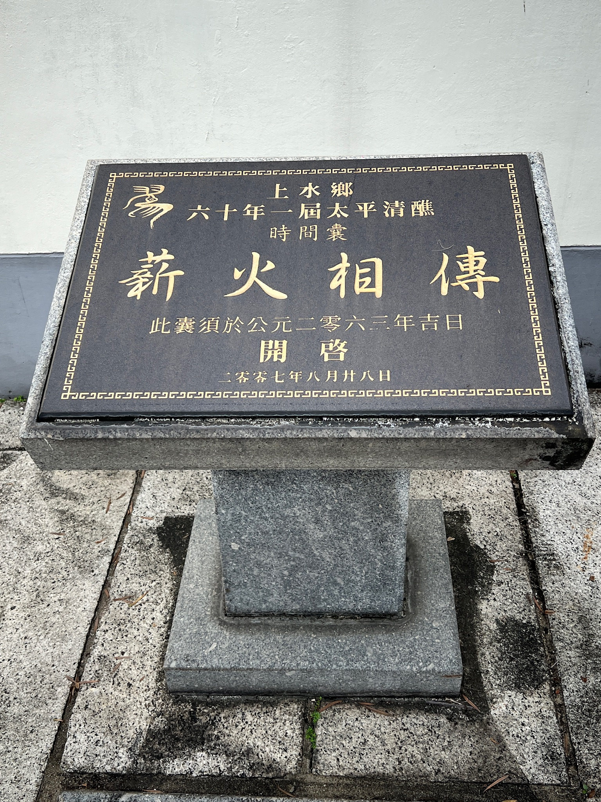
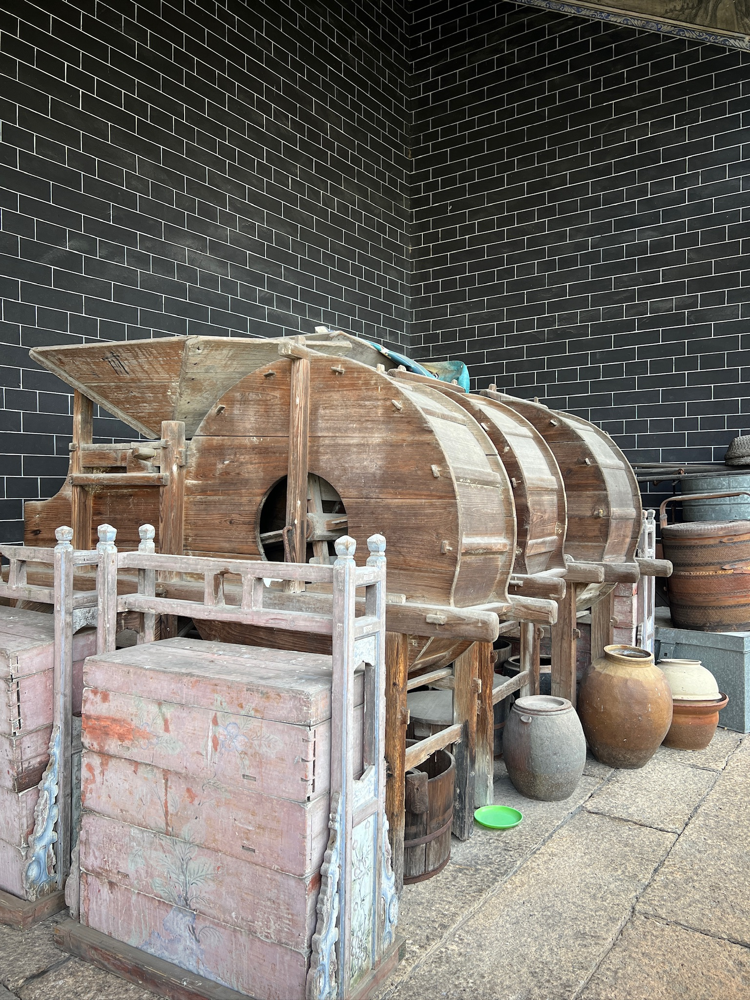

簡介
上水鄉(又稱上水圍) 位於上水梧桐河與石上河之間的河套平原上。 上水之由來因上水北面有「雙魚河」，所以上水及粉嶺一帶古稱「雙魚市」，其時亦未有上水之名。因為圍內村位處梧桐河之上，故族人稱自己居住的地方為「上水鄉」。事實上，上水一名確在明末清初期間出現，並見於1864年的《廣東圖》中。當中的「水」指的正是區內的梧桐河，而「上」字則顯示了地區所在的方位。 「上水圍」一名原指上水廖氏於明末清初建成的第一條具有圍牆與護河的圍村。圍內村初期並無圍牆，內裏分為四斗（區）。長房居於北斗，二房居於東斗西斗，三房居於南斗。 在清初抗清義軍戰敗後，不少人淪為盜匪，香港一帶治安不佳。廖氏族人於是合力建立圍內村，加建了城牆和護城河，建成五角形的圍村保衛鄉土，即是今日上水鄉的老圍, 是新界鄉郊各個聚居地之中的極少數仍然保留原有護河的圍村。及後人丁興旺，在圍外先後建立門口村，甫上村，大元村，中心村，上北村，下北村，文閣村及興仁村，新舊合共九村。 而歷史最悠久的「上水圍」則改稱「圍內村」，與新建八村一起合稱「上水鄉」(舊家譜中稱鳯水鄉)，但是由於上水圍的名聲很大，傳統圍村形象深入人心，而「上水」之名又已演變成包含古洞、河上鄉等一大片區域的地名（即「上粉沙打」分區），涵蓋了鄰近多條非廖氏族人的村落，族外人又多不清楚如何區分鄉內不同村落，所以香港市民至今仍然習慣以「上水圍」一名稱呼當地村落，認爲「上水圍」一詞等同「上水鄉」，不過政府在區內的路標上已統一使用「上水鄉」之名。
歷史與文化
上水圍的歷史可追溯至元朝末年，廖氏家族從福建遷移至廣東南部，後於明朝時期在上水一帶定居。七世祖廖南沙精通風水學，選定龍口地形似鳳之地，帶領族人挖掘護城河並建造圍村，命名為「上水鄉」。 廖姓的由來有不同說法。從「史記」、「漢書•地理誌」、「風俗通•姓氏篇」、「左傳」、以至「康熙字典」均有記載。其一謂周文王有子稱伯廖，其後代便以廖為姓。但較可信的是廖叔安（顓頊帝之後裔）的說法。叔安是顓頊帝（黄帝之後）之後，夏朝時被封廖國為侯，其子孫就以國為姓。 據「漢書•地理誌」記載「南陽郡湖陽縣，故廖國也」。即現今河南省唐河縣南四十公里湖陽鎮。東北依廖山，並繞以廖陽河、廖陰河二江。山頂有五代晉天福七年期間所建造的廖王廟遺址。蓼國，春秋時為楚所滅。 廖氏源於河南，相傳廖姓先祖的三個兒子分別居於武威郡、青河郡和太原郡，由於青河郡和太原郡的族人均後繼無人，於是由武威郡一支過繼，上水廖氏的先祖為武威郡的一系。其後輾轉由中原河南遷到福建定居，故族人自稱為客家人。上水鄉廖氏祖藉福建，開基祖廖仲傑原以鐵匠為業。於元代中葉（約1271年至1368年）南遷廣東，初居屯門，再遷深圳河以北的福田，最後定居上水雙魚河。廖氏族人現今散居於嶺下，小坑，福田，雙魚及上水一帶。
景點 - 廖萬石堂
簡介
鄉內的廖萬石堂建於1751年，是香港保存最好及最具規模的客家宗祠之一，建造講究，陳列大量珍貴文物，1985年獲列為「香港法定古蹟」。 上水鄉除了廖萬石堂外，尚有另兩間分祠，分別是顯承堂及明德堂，以廖族四世祖廖應龍及廖應鳳名義建立，同為廖族祭祀婚喪讌飲集會場地。 堂號標誌著姓氏的重要分支部份。堂號一般取自姓氏的發祥地，也有以祖先的功績和德行為名。上水廖萬石堂的取名據説是為了紀念廖族名人廖剛及其四子，當時他們父子五人都是朝廷命官，合共領取萬石俸祿，因此上水圍廖氏族人將其祠堂起名為「萬石堂」。 與堂號相應的是堂聯，堂聯乃堂號的內涵，以對聯形式將氏族的發祥，功德偉業等表現出來。廖氏堂聯中流傳的有： ＂三州世澤，萬石家聲＂ ＂武威傳舊績，世綵著家聲＂ ＂萬石門中迎百福，三州戶內納千祥＂ 1932年，廖萬石堂改建為幼稚園，推行現代教育。這所幼兒園後來發展成為鳳溪廖萬石堂中學。 至今，廖萬石堂仍是廖氏家族舉行春秋祭祀的場所。
建築特色
新界村落的祠堂數目不少，大部份為兩堂一院的格局。廖萬石堂為三進兩進的建築結構。這意味著它更大。 紅砂岩柱是公祠最昂貴的材料。廖萬石堂亦採用紅砂岩，但後殿即祖壇所在的位置，地基亦採用紅砂岩。由此也可見上水廖氏家族的富裕。 1985年，在政府的建議下，廖萬石堂進行了大規模修復。 整座建築裝飾華麗，灰塑、木刻、壁畫、泥塑等比目皆是，題材多為傳統吉祥圖案。 廖萬石堂一特色是院前建有一幅稱「照壁」的牆，據稱可以阻擋外間的煞氣和保存屋內的原氣 廖萬石堂正門，簡樸的外貌，鮮紅的對關，門上牌匾是1986年重修時立的。 瓦頂屋脊是華麗的灰雕，兩端是鰲魚，古時狀元接金榜是站在鰲石前，稱「獨佔鰲頭」。 屋頂的垂脊流露客家建築風格，垂脊上紅色的博古架及簷前獅子均顯露多寶典藏與威望。 過廳上金漆大字的牌匾，由賜進士出身刑部主事翰林加級的廖瑛所題。 過廳擺有的滅火裝備，除水桶外尚有人力手搖水泵，在當時來說已很先進。 上水圍廖萬石堂内有一塊横匾寫着「成均耆俊」。他的老師稱讚這位弟子是活到老學到老 據說，廖氏其中一位子孫在清朝時期，一心想在科舉中考取功名，但却屢試不第。在這漫長、刻苦功讀的歲月中，從未娶妻。終於，在第五次考試完成後，因年事已高，只能娶了身邊的丫環為妻，並且生育了後代。 一直教導他的老師被這位勤奮的弟子所感動，於是送了他四個大字 - 成均耆俊。 註解： 成均 - 相傳為遠古堯舜時期的學校 耆俊 - 年老而才能優異者
習俗祭典
廖萬石堂是廖氏家族舉行祭祀與節慶活動的核心場所，定期舉辦春祭、秋祭及太平清醮等儀式，體現了深厚的家族與社區文化。
廖氏春祭
廖氏春祭在每年的農曆二月初二早上11時正 舉行。 春祭儀式中，負責祭祠的長老也主要由族內的長輩及長子所組成。相對而言，庶子 並不能夠直接負責祭祀。 一、 祭品及其象徵意義 除 了常見的茶、酒、飯和湯之外，當日的祭品還有 「五生五熟」、大燒豬、糖果等。「五生五熟」 指豬肉、雞肉及其內臟，分開十碟而生熟各半。 「五生五熟」所採用的生品和熟品也隨時代而有 所改變或簡化。 「五」字在中國農耕社會中有其象徵意 義。在農業社會中，五行（即金木水火土）是農 民農耕方式的依據。 春祭在廖氏族人的心目中 有一個祈求祖先保佑族人在來年豐收的含義 希望廖氏家族繼續有長長 遠遠的傳承 二、祭祀儀式 1、拜左廳與簡公 拜祭簡公，以表達對簡氏讓出土地的感 激。相傳在廖氏到達上水之先，簡氏早已定居於 此。簡氏後來慷慨讓出土地與廖氏，因此廖氏族 人一直心懷感激。 2. 點炮 儀式正式在早上11時開始。村民在祠堂門前 點燃起炮竹和關上大門 (關上所有門的原意是防止妖邪入侵。) 廖氏的女性族人只可在門 外準備豬肉，待儀式完結時分派豬肉予村民。只 有外來女性（即非族人）可以進入祠堂。 3. 拜祭地脈龍神與五祖祖先 拜祭五祖祖先是廖氏春祭中最重要的環節 4、拜右廳、福德正神與領豬肉 右廳，即魁 賢祠。魁賢祠放置有功名的廖氏族人的牌位。拜過右廳之後，族人再拜土 地，即福德正神，祈求土地護佑。之後，整個廖 氏春祭儀式正式完結，過程約為45分鐘。 在建立萬石堂前，早已有一戶姓簡人士居住此地，後來遷至大頭嶺以成全廖氏建祠，自此每逢廖氏宗族在萬石堂舉行春祭，為答謝簡公的恩德，必定先在進祠後右邊第一條柱的地上拜祭簡公，然後依次拜祭遠祖、開基祖和土地。
廖氏秋祭
上水廖氏秋祭在每年農曆的九月初九、初十，亦即重陽的正日及翌日舉行，上水鄉公所均會統籌兩天的秋祭儀式，與春祭類似，族人通過祭祀活動表達對先祖的敬意，並祈求來年豐收與家族繁榮。
太平清醮

廖萬石堂內放置了太平清醮時間膠囊。 相傳最初上水圍的太平清醮並非相隔60年舉辦一次，由於當時打醮後，圍村的運氣不佳，於是眾人便回到媽廟(即天后廟)尋求神靈指示打醮的年期。不過經過多次問杯都得不到天后的同意。其中有人沉不住氣説60年辦一次，隨即擲出聖杯。因此，上水圍每60年舉辦一次打醮。上水鄉每隔六十年才舉行一次太平清醮，是香港所有舉行太平清醮的鄉村中間隔期最長的，故此對於村民和區內居民來說一生中能看見一次打醮祭典已屬難得，最近的一次在2006年3月舉行，吸引村內外逾二萬人到場觀看。
榨糖石絞

香港在兩個世紀前也有小規模的種蔗及榨糖業，但由於產量較少只供本地消費，所以知道的人不多。 種植的地區大都選擇疏鬆的沙壤土，例如西貢北約及上水打鼓嶺。 不過其他較濕的田地亦可種植，只是必須起窪排水，廈村地區在十九世紀末此類的蔗田頗多。 在甘蔗收穫的季節（每年農曆11月末）幾條村便搭起糖寮榨蔗稱為糖坊。所用的工具就是石磨或稱為石絞，是由兩個大圓石輪合成，用一軸心固定位置，軸心豎於「石地塘」上，操作時以牛拖動運轉榨出的蔗汁，便有渠管流入桶中，然後放在寮內爐灶提煉成黃糖。 而存放在廖萬石堂旁的石絞就是香港少數仍然保存良好的榨糖石絞。 以往在糖寮內都會安放一處神位以供奉馬鄧先師（廣東），北方所供奉的祖師是杜康娘娘。 直至十九世紀末期英國商行太古洋行在港島北角興建了一間機械化的糖廠，從爪哇、澳洲、菲律賓等地輸入粗製的黃糖，加以提煉成白砂糖或其他高級糖類。成為本港早期現代化工業產品，除本土銷售外更加轉運出口。對新界土法搾糖業帶來影響。 南京條約的簽訂為英資公司在中國帶來商機。 1878年渣甸洋行創辦香港首家煉糖廠，名為中華煉糖廠，位於銅鑼灣。 其後1881年太古集團亦決定於香港成立糖業，位於北角的廠房於1884年投產